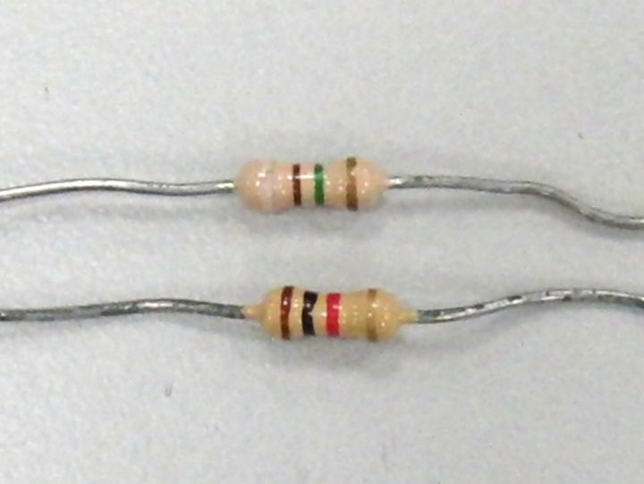
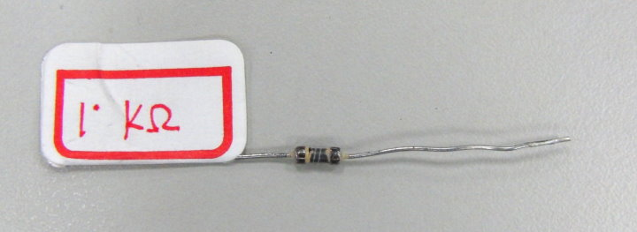
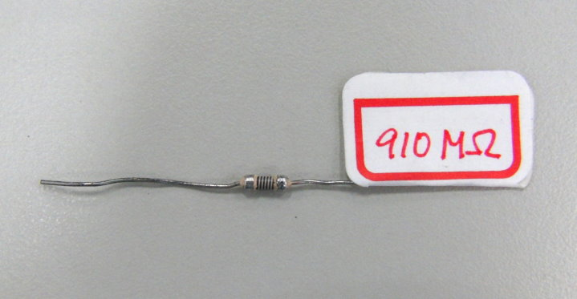
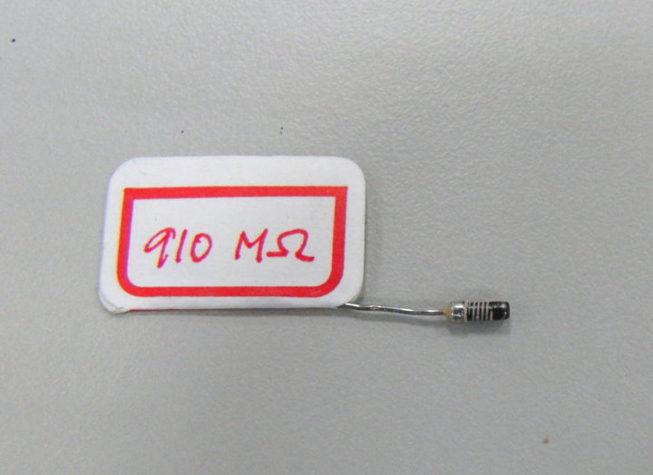
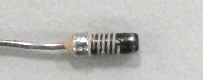
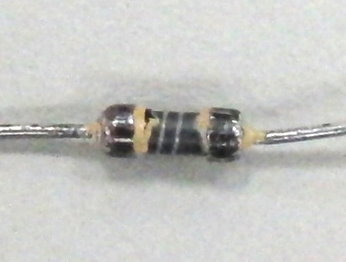
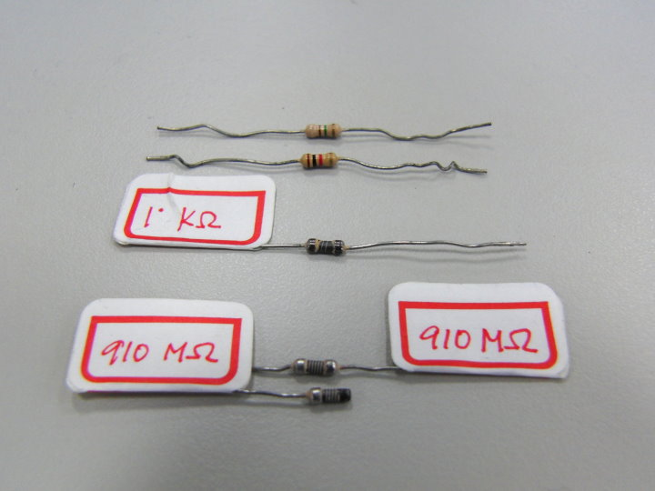

↑你會讀電阻色碼嗎？你有沒有想過這個問題，電阻的體積大小都差不多，
電阻值可以相差好幾個數量級。小的幾Ohm，大的數MOhm。是如何辦到的呢？

↑用刀片刮開來看！

↑比較上面兩個電阻，你有什麼發現呢？

↑拔掉一邊的電極，看得更清楚了。

↑來張特寫，910M的。

↑1k的。

↑大合照。
碳膜電阻，是將碳膜鍍在陶瓷圓柱的表面，再經由刻劃出螺紋的方式調整所要的電阻值。
所以電阻越高的，螺紋越密集。想一想，螺紋從3圈變為5圈，電阻會增加多少倍呢？
比較照片中的螺紋數與電阻值，你認為這兩個碳膜電阻，碳膜厚度相同嗎？
感謝 師大附中 陳忠城老師 提供刮好的電阻。